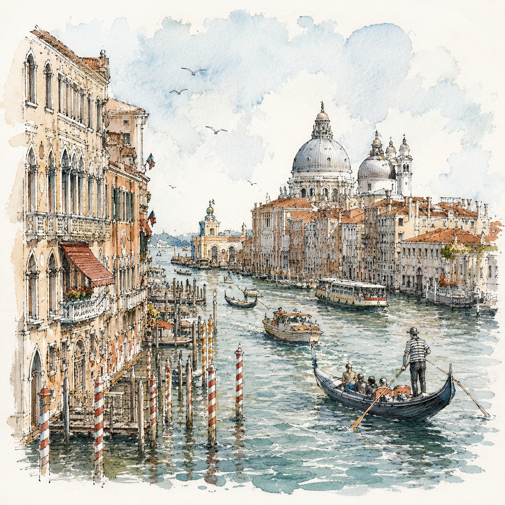
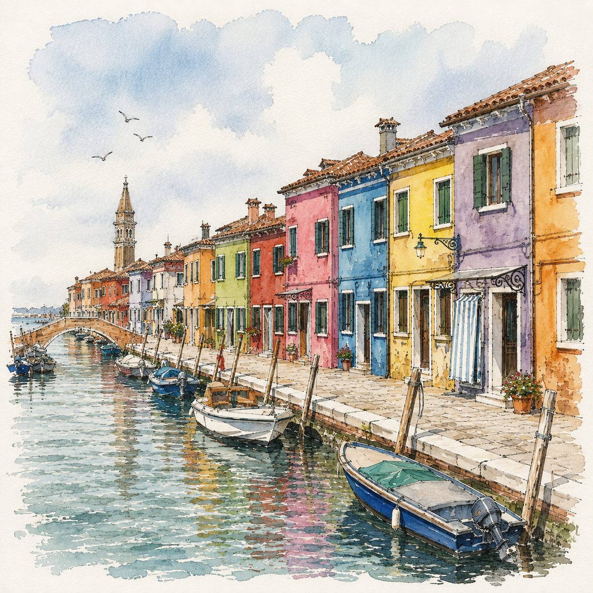
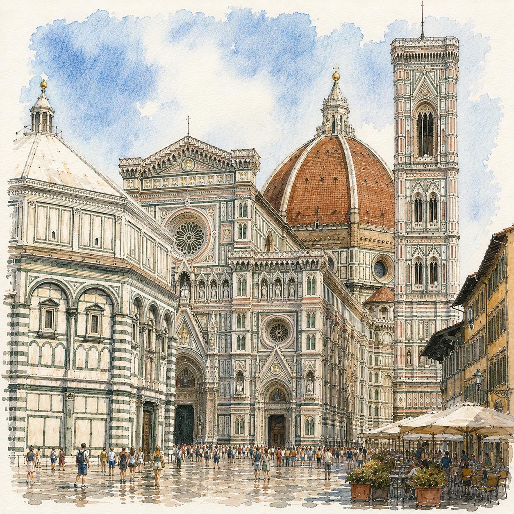
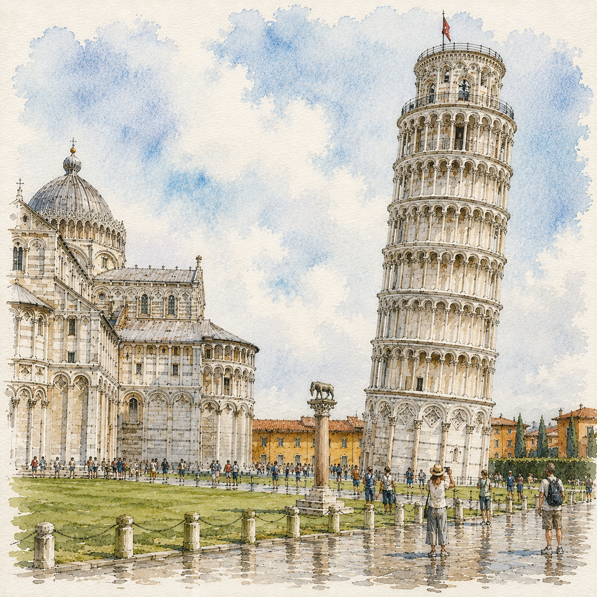

18 天 17 夜，從威尼斯到西西里島。
全程高鐵與跨海臥鋪火車
潟湖上的水都，以貢多拉與彩色漁村，寫下旅程的第一頁。
搭乘土耳其航空經伊斯坦堡轉機，展開 18 天的義大利旅程。

搭船前往布拉諾島，漫遊繽紛漁村巷弄，感受威尼斯潟湖的另一種色彩。

文藝復興的搖籃，從百花大教堂到托斯卡尼金黃丘陵。
高鐵直達佛羅倫斯，文藝復興的搖籃。

包車一日深入托斯卡尼丘陵，走訪山城與在地酒莊，飽覽金黃田園風光。
一日前往比薩，親眼見證奇蹟廣場上的斜塔奇景。

永恆之城，穿梭古蹟與信仰的中心。
高鐵南下羅馬，展開三晚的梵蒂岡與古城巡禮。
告別羅馬後，搭上一趟橫渡海峽的臥鋪火車，從西岸的市場煙火氣到東岸埃特納火山下的柑橘園，深入地中海最大島嶼的兩種面貌。
睡一覺醒來，列車已隨渡輪橫渡海峽，抵達西西里島西岸的巴勒摩。
專車一日走訪海濱小鎮切法盧，以及以馬賽克鑲嵌聞名的蒙雷阿萊。
專車橫越西西里島，途經神殿之谷，入住陶爾米納懸崖海景包棟 Villa。
拜訪 Teatro Antico di Taormina 古劇場，俯瞰埃特納火山與愛奧尼亞海。
前往埃特納火山腳下的血橙 / 柑橘農莊，品嚐果園午餐與採果體驗。
專車前往卡塔尼亞機場（CTA），搭乘土航返回台北，結束 18 天的義大利之旅。
全程靠高鐵與跨海臥鋪火車串聯，不必忍受機場托運與安檢排隊。
不繞南義中繼站，威尼斯、佛羅倫斯、羅馬可以待得更久更深入。
從羅馬睡一覺醒來就到了西西里，省下一晚飯店錢，也是極特別的旅行回憶。
僅需兩段航班：台北 ⇄ 威尼斯進，卡塔尼亞出，中間全程陸上與海上交通串接。